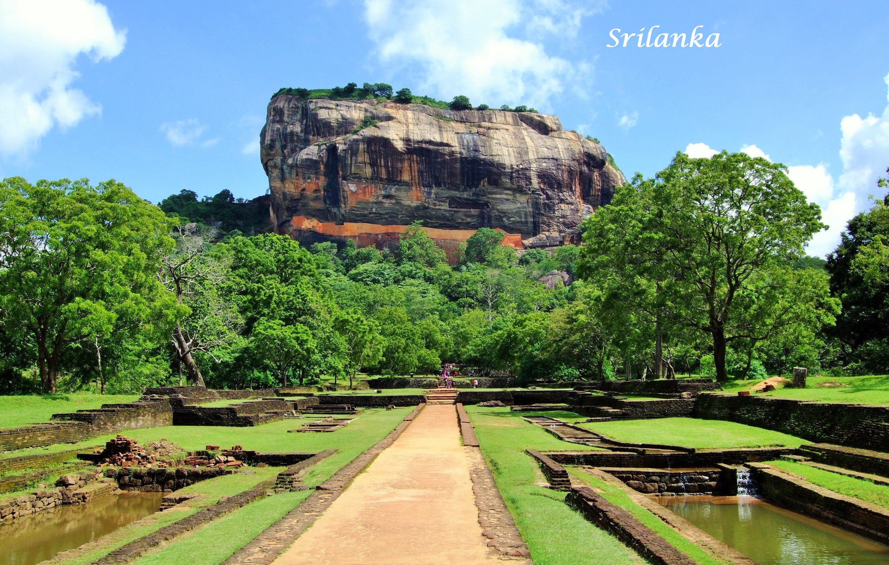

 Kathmandu, the city of peace, lives true to this description. The city is charming, busy, bustling, serene, alive and asleep - all at once. The capital of Nepal, Kathmandu is the most accessible city in the country - it is Nepal's only metropolitan city as well. From buying trekking equipment in Thamel or taking a rickshaw ride through traffic-packed alleys of the old part of the city or simply visiting the fascinating buildings in Durbar Squares, Kathmandu is truly a place filled with warmth.